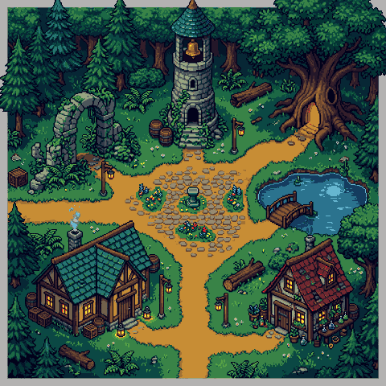

PLAYABLE EXPERIMENT / 01Mosslight: The Bellkeeper's Road
A small pixel-art RPG experiment about restoring a village's voice. Explore, meet forest guardians, and collect lost bell notes in a turn-based quest.
The browser version is also available on the project host; access may require a Tailscale connection.